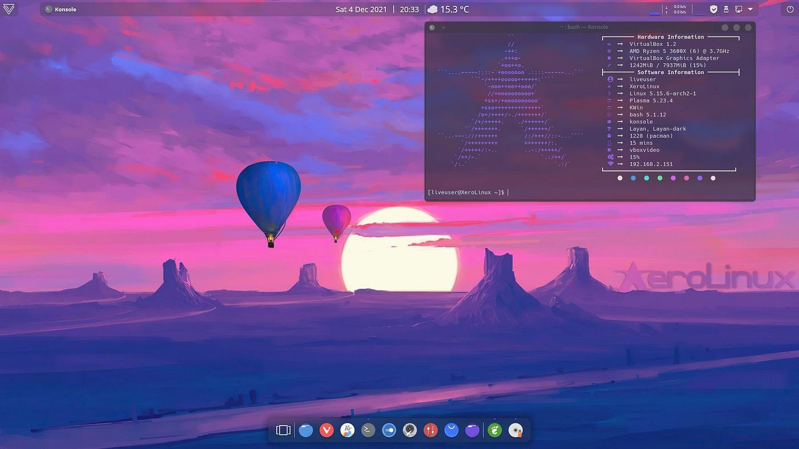

<html lang="en"></html>
<head>
    <meta charset="UTF-8">
    <meta name="viewport" content="width=device-width, initial-scale=1.0">
    <link rel="icon" href="../photos/favicon.ico" type="image/x-icon">
    <link rel="preconnect" href="https://fonts.googleapis.com">
    <link rel="preconnect" href="https://fonts.gstatic.com" crossorigin>
    <link rel="preconnect" href="https://fonts.googleapis.com">
    <link rel="preconnect" href="https://fonts.gstatic.com" crossorigin>
    <link href="https://fonts.googleapis.com/css2?family=Lato:ital,wght@0,100;0,300;0,400;0,700;0,900;1,100;1,300;1,400;1,700;1,900&family=Roboto:ital,wght@0,100;0,300;0,400;0,500;0,700;0,900;1,100;1,300;1,400;1,500;1,700;1,900&display=swap" rel="stylesheet">
    <link href="https://fonts.googleapis.com/css2?family=Roboto:ital,wght@0,100;0,300;0,400;0,500;0,700;0,900;1,100;1,300;1,400;1,500;1,700;1,900&display=swap" rel="stylesheet">
    <link rel="stylesheet" href="../styles/general.css">
    <link rel="stylesheet" href="../styles/header.css">
    <link rel="stylesheet" href="../styles/image-gallery.css">
    <link rel="stylesheet" href="../styles/blog.css">
    <title>Blogs</title>
    <style>
        .blog-main-part {
            margin-top: 50px;
            margin-left: 20px;
            margin-right: 20px;
        }
        .blogtitle {
            font-size: 30px;
            font-weight: bold;
            margin: 0;
        }
        .blog-image {
            width: 390px;
            max-width: 100%;
            border-radius: 8px;
        }
        .blog-user {
            width: 30px;
            border-radius: 50%;

        }
        .writer {
            color: rgb(96, 96, 96);
            font-size: 15px;
            margin-bottom: 0;
            margin-top: 15px;
        }
        .blog-time {
            color: rgb(96, 96, 96);
            font-size: 14px;
            margin: 0;
        }
    </style>
    <body>
        <div class="website-title-container">
            <!--<p class="website-title">
                PIX.CINEMATIC
            </p>-->
            
            <div class="nav-items">
                <a href="../index.html" class="nav-item-anchor"><p class="nav-item-individual">HOME</p></a>
                <a href="../blog-page.html" class="nav-item-anchor"><p class="nav-item-individual" style="font-weight: bold;">BLOGS</p></a>
                <a href="../about.html" class="nav-item-anchor"><p class="nav-item-individual">ABOUT</p></a>
                <a href="../contact.html" class="nav-item-anchor"><p class="nav-item-individual">CONTACT</p></a>
            </div>
        </div>
        <div class="blog-main-part">
            <p class="blogtitle">
                Why Linux OS is the Best Choice for Modern Computing
            </p>
            <p class="blogpara">
                1. <b>Open-Source and Free</b><br>
                Linux is open-source, meaning anyone can modify or distribute it freely. This gives users control and flexibility, allowing developers to customize it for their needs without any licensing fees.
            </p>
            
            <p class="blogpara">
                <b>2. Stability and Performance</b><br>
                Linux systems are known for their stability and rarely crash. They handle heavy tasks with ease, making them perfect for servers, programming, or resource-intensive applications.
            </p>
            <p class="blogpara">
                <b>3. Enhanced Security</b><br>
                Linux’s structure and community-led development make it highly secure. It is less prone to malware and viruses compared to other operating systems, thanks to its robust permissions system.
            </p>
            <p class="blogpara">
                <b>4. Customization</b><br>
                Linux offers numerous distributions (like Ubuntu, Fedora, and Arch Linux) catering to various user needs, from beginner-friendly to highly advanced setups.
            </p>
            
            <p class="blogpara">
                <b>5. Strong Community Support</b><br>
                With an active global community, Linux users have access to countless forums, tutorials, and documentation, making troubleshooting and learning easy.
            </p>
            
            <p class="blogpara">
                <b>Conclusion</b><br>
                Whether you're a developer, IT professional, or casual user, Linux provides a stable, secure, and highly customizable environment, making it the best choice for many.
            </p>
            <p class="writer">
                Written by Vaibhav Raj
            </p>
            <p class="blog-time">
                SEPTEMBER 21 2024 / 9:00 PM
            </p>
        </div>
        <div class="line-break" style="margin-top: 20px;"></div>
        <div class="footer">
            <p class="pix-cinematic">
                PIX.CINEMATIC
            </p>
            <p class="footer-text">
                &#169; Copyright | All rights reserved
            </p>
        </div>
    </body>
    </html>